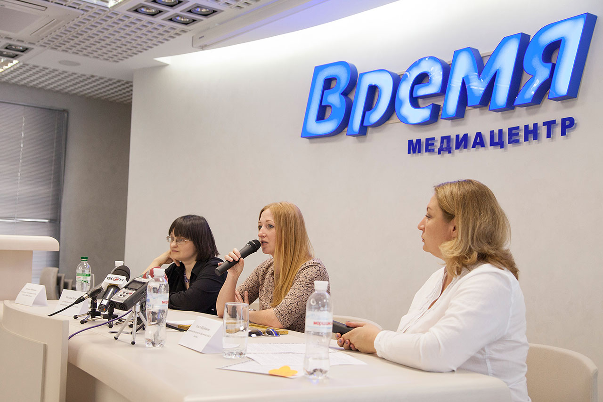

«Лінія згоди» допомагає сім'ям, ветеранам, ВПО та іншим людям, які опинилися в кризових життєвих обставинах, відновлюватися та знаходити ресурси для життя. Навчаємо фахівців, які працюють із кризовими категоріями населення, і створюємо практичні інструменти для громад, шкіл і соціальних служб України.
Стати партнером Наші проєкти«Лінія згоди» заснована у травні 2014 року волонтерами, які надавали соціально-психологічну та гуманітарну допомогу людям, що постраждали від війни: ВПО та їхнім дітям, ветеранам та їхнім сім'ям, родинам загиблих.
За 12 років ми еволюціонували від прямого гуманітарного реагування до системної роботи. Сьогодні наш фокус — психосоціальна підтримка (MHPSS) людей у кризових життєвих обставинах — сімей, ветеранів, ВПО, навчання фахівців помічних професій та розробка практичних методичних інструментів, зокрема для роботи з дітьми.
Ми працюємо в Харкові — прифронтовому регіоні з найвищою потребою у психосоціальній підтримці та реалізуємо проєкти по всій Україні.

Інтереси та захист дитини — понад усе в кожній активності організації.
Працюємо на основі визнаних методик: ППД, кризове втручання, супервізія.
Діємо разом із громадами, службами та міжнародними організаціями.
Кожен продукт — інструмент, який фахівець може застосувати одразу.
Тренінги, семінари та супервізія для соціальних служб, освітян і служб у справах дітей: кризове/екстрене втручання, перша психологічна допомога, психологічна стійкість, профілактика вигорання.
Групові й індивідуальні програми для сімей у кризі, ветеранів та їхніх родин, ВПО — від театральних методик до VR-терапії. Діти отримують підтримку опосередковано — через батьків і фахівців.
Розробка, апробація і розповсюдження практичних інструментів: картки, робочі зошити, ігри, пам'ятки, посібники та PDF-матеріали для фахівців і родин.
Впровадження послуги кризового/екстреного втручання, інструменти для соцслужб, участь у місцевих і державних програмах розвитку.
Ми працювали без перерв — у мирний час, під час пандемії та повномасштабного вторгнення.
Заснування. Соціально-психологічна допомога ВПО у 6 громадах Харківщини; співорганізація Форуму волонтерів та НУО (Святогірськ).
«Включи себе в життя»: плейбек-театр для ВПО — 16 вистав, 572 бенефіціари у Харківській і Донецькій областях.
«Громадянський піксель»: інтерактивний театр для ветеранів; виставка «Переможці»; відкрита зустріч зі Стейнаром Бріном (Нансенська мережа діалогу).
Розвиток системи соціально-психологічних послуг: супервізії та навчання 140 фахівців соцслужб у 5 районах Харківщини — перший проєкт такого формату в Україні.
«Розповідаючи історії ветеранів»: документальний фільм «Додому», вистава «ДПЮ», участь у ГогольFest та фестивалі у Варшаві.
«Підвищення ресурсності соціальних служб Харківської області»: дворічна програма навчання фахівців за напрямом позитивної психотерапії.
Програма підприємництва для ветеранів: 34 учасники, 15 захищених бізнес-планів, 9 діючих мікробізнесів.
«Створюємо магію разом»: продуктова підтримка вразливих груп у партнерстві з соцслужбами та ГО з 5 міст України.
Гаряче харчування для ВПО та мешканців Харкова, чиє житло зруйновано; тренінг з інституційної спроможності (ACTED, EU).
Захист дітей найвищого ризику у 9 містах України — грантоотримувач БФ «Посмішка ЮА» у партнерстві зі Street Child Україна.
Тренери організації долучилися до проєкту «Згуртовані заради відновлення» — VR-терапія для ветеранів і ветеранок (проєкт за підтримки GIZ Ukraine, ХОВА та простору «Пліч-о-пліч»). Провели навчання освітян із ППД і сенсорної стабілізації в межах проєкту МБО «СОС Дитячі Містечка» (фінансування Norad).
На запрошення ГС «Українська мережа за права дитини» — тренінги для фахівців соціальної роботи громад Харківщини з надання послуги кризового/екстреного втручання.
Послуги із захисту та підтримки дітей у 9 містах: від Чернігова до Запоріжжя.
Тренінги для фахівців соцроботи: планування, координація та надання послуги кризового/екстреного втручання.
Участь у проєкті «Згуртовані заради відновлення»: психологічна підтримка ветеранів і ветеранок методикою VR-терапії.
Тренерська експертиза: 3-денна програма практик підтримки, сенсорної стабілізації та саморегуляції для педагогів.
Навчання та супервізії для 140 фахівців соцслужб 5 районів Харківщини.
Обіди для ВПО та людей, чиє житло зруйновано, за процедурами міжнародної гуманітарної системи.
Ми відкриті до перевірки: установчі документи, політики та звіти доступні для донорів і партнерів.
Нова редакція, 21.10.2016 (PDF)
Керівні органи відповідно до Статуту (PDF)
Child Safeguarding Policy (PDF)
PSEA, антикорупційна, конфлікт інтересів
Результати та фінанси за 2025 рік
ЄДРПОУ 39480178, ознака неприбутковості